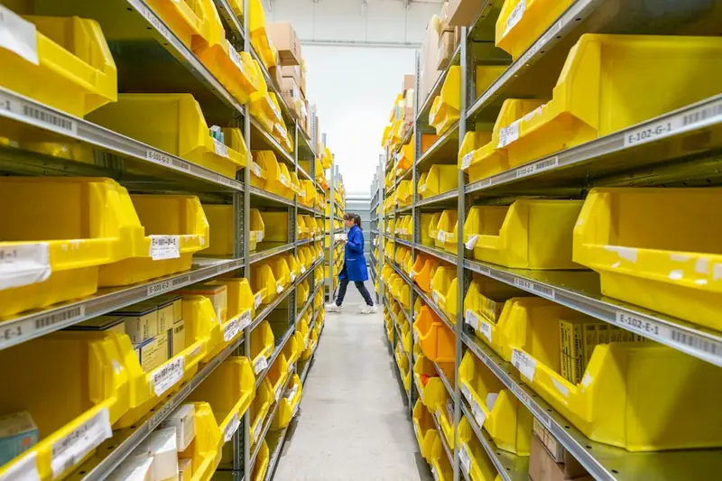
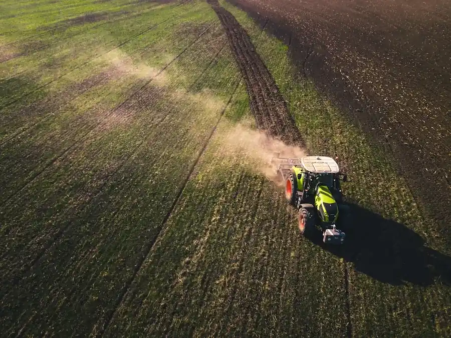

Direct Produce Supply Chain & Logistics
Eliminating middlemen to deliver farm-fresh organic produce to wholesale distribution hubs and retail networks within 24–48 hours of dawn harvest.
Minimizing Post-Harvest Spoilage With Solar Pre-Cooling
Up to 30% of commercial agricultural crops in India rot before reaching retail shelves due to deficient cold chains. Stackly solved this challenge by situating decentralized micro-cold rooms directly on the field perimeter.
Produce gathered at daybreak enters 4°C solar chilling units within 45 minutes, halting cellular respiration and locking in natural moisture, sugars, and vitamins.
Industry-leading cold storage efficiency vs 14% conventional loss.
Continuous IoT refrigerated telematics logged every 60 seconds.


Active Refrigerated Trucks With Live GPS Telemetry
Our dedicated fleet of multi-temperature refrigerated trucks serves major metropolitan centers daily. Equipped with cellular IoT dataloggers, buyers can track vehicle GPS coordinates and compartment temperatures in real time.
- ✓ Instant Temperature Alerts: Automatic alerts triggered if cargo temperature deviates by more than 1.5°C.
- ✓ Tamper-Evident Geofenced Locks: Digital seals unlocked only when GPS confirms arrival at customer receiving dock.
- ✓ Multi-Zone Partitions: Separate cooling chambers for delicate berries (2°C), root veg (6°C), and room temp grains.
Automated Pallet Loading & Zero Bruise Handling
Inside our climate-controlled cross-dock facility, pallets are loaded in sealed airlock docks directly into waiting reefer trailers, preventing ambient hot-air thermal shock.
Barcoded master pallets are scanned at transfer, instantly updating digital inventory balances across the Produce Buyer portal.
Sealed rubber dock cushions ensure trucks remain cooled throughout the 18-minute loading window.
The Four-Stage Direct Cold-Chain Protocol
Scientific temperature management from crop cutting to supermarket display shelf.
Dawn Field Harvest
Hand-picked between 5:00 AM and 8:30 AM when crop internal pulp temperature is at its natural minimum.
Solar Hydro-Cooling
Chilled water baths and forced-air tunnels pull field heat down to 4°C within 45 minutes of gathering.
Airlock Cross-Dock
Palletized in returnable vented plastic crates and loaded through sealed insulated dock seals.
Reefer Delivery
Dispatched on dedicated daily runs with live telemetry and automatic temperature SLA verification.
Produce Buyer Dashboard Telemetry & Dispatch Control
Full control over your wholesale vegetable and grain shipments from any browser or smartphone.
Live Order Tracking
Track current truck location, estimated dock arrival hour, and cargo core temperature in real time.
View Live Orders ➔Batch Quality Sheets
Download Gas Chromatography residue lab sheets and Brix sugar index tests for every pallet.
Review Quality Certs ➔Digital Billing & Invoices
Automated GST-compliant invoices generated at the moment of electronic receiving gate sign-off.
View Billing History ➔Connecting South India's Premier Organic Farmland
12
Regional Cold Storage Hubs
28
Solar Refrigerated Trucks
180+
Supermarkets & Kitchens
45 MT
Daily Harvest Handled
Cold-Chain Service Level Agreement (SLA)
Guaranteed benchmarks safeguarding your institutional food service inventory.
< 1.8% Transit Shrinkage
If produce dehydration or weight loss exceeds 1.8% during transit, the differential weight is credited instantly.
99.4% On-Time Delivery
Guaranteed morning delivery windows before 7:00 AM for commercial cloud kitchens and retail supermarket stocking.
No-Questions Replacement
Any crate damaged by road transit or cold unit fault is replaced within 4 hours from the nearest regional cross-dock.